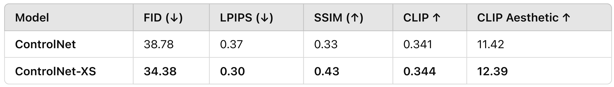

Rotem Israeli – Research Engineer
ControlNet for Diffusion Transformers 🎨
- Built a ControlNet-like module for fine-grained text-to-image control, extending ControlNet-XS.
- Outperformed Sana’s ControlNet baseline across all metrics.
- Injected conditioning with zero-conv layers to preserve pretrained features.
- Engineered efficient training with lazy loading & reduced memory footprint.


Visual Question Answering 🔍
- Developed a VQA pipeline inspired by LLaVA: vision encoder ➜ connector ➜ language model.
- Staged training: connector first, then LoRA-fine-tuned the LLM.
- Bench-tested SigLIP, MobileCLIP, DINOv2, EfficientSAM for robust visual features.
- Added dynamic high-res processing via LLaVA-NeXT +
s² wrapper.
- Compared Gemma, Qwen, SmolLM, OpenELM for answer quality.

World Model à la Google Genie 🧞
- Frame Tokenizer ➜ Latent Action Model ➜ Dynamics Model pipeline.
- EfficientVit + MobileStyleGAN compression for ultra-fast tokenization / decoding.
- Replaced Genie’s ST-Transformer with a quantized lightweight MLP.
Mobile Face Transformation App 📱
- 🏆 First place at Samsung Next MobileXGenAI Hackathon — real-time 30 fps face transformations on mobile (CoreML optimised).
- Custom encoders inject facial features at multiple StyleGAN decoder layers for detailed, natural edits.
- Combined pixel, perceptual, and adversarial losses for robust and identity-preserving results.
- Efficient pipeline (MobileStyleGAN + EfficientFormer + CLIP) enables high-quality transformations fully on-device.
- Used both
w-latents and F-latents for flexible and realistic facial attribute manipulation.
- App is fully edge-compatible: minimal memory footprint, no server-side inference needed.

Research Engineer at nlpearl.ai
- Real-time pause detection & starter suggestions via fine-tuned LLMs.
- Explored encoder vs decoder architectures with LoRA + multi-stage training.
- Designed an SLM that generates task-specific tokens for multi-task inference.
Research Engineer at Israeli Navy
- Adapted EnCodec & WavTokenizer to sonar/audio with staged LoRA training.
- Self-supervised training on vast unlabeled sonar spectrograms.
- Semi-supervised, mixup, and pseudo-labeling for robustness.
- Distilled expert ensembles to lightweight students → faster inference.
- Extensive data cleaning & NAS (RBF-KAN heads) for mission-critical accuracy.
 GitHub
GitHub